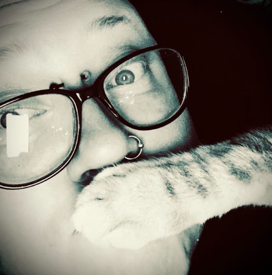

Tämä on kissojen valtakunta - linna edition.
Täällä asuu kaksi ihmistä joista toinen on se varsinainen palvelija. Hänen nimi on Marjo. Marjolla on ollut monia kissoja vuosien aikana sekä pupuja sijaiskodiaa ja siksi täällä välillä asusteleekin myös pupuja.

Marjo on tämän linnan pääjehu. Hänen vastuulla on kaikki ja hän tietää kaiken mitä tapahtuu. Kissat ovat Marjon lapsia ja siksi todelle eli TODELLA tärkeitä. Tietotaitoa löytyy kodittomien eläinten kanssa sekä vähän luonnon eläinten eli jos et löydä numeroa soittaa paikalliseen eläinsuojeluuhdistykseen voit laittaa Marjolle viestiä. Hän ohjaa eteenpäin.
Pois kotoa oleminen on hänelle todella ahdistavaa ja sitä ei usein tapahtu. Siksi Marjo kiittää paljon (tooooodeeeellla paljon) avustasi. Jos yhtään tulee kysyttävää niin otathan yhteyttä. Huomaathan, että hoitojärjestyksessä on myös ulkona asuvat villit siilit. Heidät pitää myös muistaa hoitaa.
Kaikki kissat ovat yksilöitä ja siksi pitää kunnioittaa heidän omaa tilaa ja persoonaa. Älä mene leittamaan kättä kissan massulle jos ohjeet ohjaavat tekemään toisin. Jos teet sen niin se on omalla vastuulla ‼️.